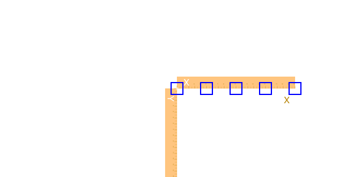
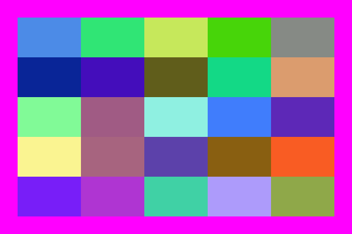
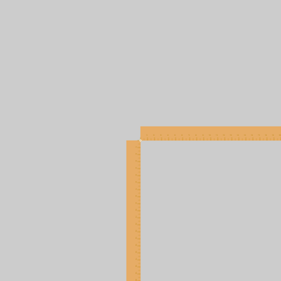

The basics
The underlying drawing model is that you make shapes, or add points to paths, and these are filled and/or stroked, using the current graphics state, which specifies colors, line thicknesses, and opacity. You can modify the current drawing environment by transforming/rotating/scaling it. This affects subsequent graphics but not the ones you've already drawn.
Specify points (positions) using Point(x, y). The default origin is at the top left of the drawing area, but you can reposition it at any time. Many of the drawing functions have an action argument. This can be :nothing, :fill, :stroke, :fillstroke, :fillpreserve, :strokepreserve, :clip. The default is :nothing.
The main defined types are Point, Drawing, and Tiler. Drawing is how you create new drawings. You can divide up the drawing area into tiles, using Tiler, and define grids, using GridRect and GridHex.
Points and coordinates
The Point type holds two coordinates, x and y. For example:
julia> P = Point(12.0, 13.0)
Luxor.Point(12.0, 13.0)
julia> P.x
12.0
julia> P.y
13.0Points are immutable, so you can't change P's x or y coordinate directly. But it's easy to make new points based on existing ones.
Points can be added together:
julia> Q = Point(4, 5)
Luxor.Point(4.0, 5.0)
julia> P + Q
Luxor.Point(16.0, 18.0)You can add or multiply Points and scalars:
julia> 10P
Luxor.Point(120.0, 130.0)
julia> P + 100
Luxor.Point(112.0, 113.0)You can also make new points by mixing Points and tuples:
julia> P + (10, 0)
Luxor.Point(22.0, 13.0)
julia> Q * (0.5, 0.5)
Luxor.Point(2.0, 2.5)You can use the letter O as a shortcut to refer to the current Origin, Point(0, 0).
axes()
box.([O + (i, 0) for i in linspace(0, 200, 5)], 20, 20, :stroke)
Angles are usually supplied in radians, measured starting at the positive x-axis turning towards the positive y-axis (which usually points 'down' the page or canvas, so 'clockwise'). (Turtle graphics conventionally let you supply angles in degrees.)
Coordinates are interpreted as PostScript points, where a point is 1/72 of an inch.
Because Julia allows you to combine numbers and variables directly, you can supply units with dimensions and have them converted to points (assuming the current scale is 1:1):
inch (
inis unavailable, being used byforsyntax)cm (centimeters)
mm (millimeters)
For example:
rect(Point(20mm, 2cm), 5inch, (22/7)inch, :fill)Drawings
Drawings and files
To create a drawing, and optionally specify the filename and type, and dimensions, use the Drawing constructor function.
Luxor.Drawing — Type.Create a new drawing, and optionally specify file type (PNG, PDF, SVG, or EPS) and dimensions.
Drawing()creates a drawing, defaulting to PNG format, default filename "luxor-drawing.png", default size 800 pixels square.
You can specify the dimensions, and assume the default output filename:
Drawing(400, 300)creates a drawing 400 pixels wide by 300 pixels high, defaulting to PNG format, default filename "luxor-drawing.png".
Drawing(400, 300, "my-drawing.pdf")creates a PDF drawing in the file "my-drawing.pdf", 400 by 300 pixels.
Drawing(1200, 800, "my-drawing.svg")`creates an SVG drawing in the file "my-drawing.svg", 1200 by 800 pixels.
Drawing(width, height, surfacetype, [filename])creates a new drawing of the given surface type (e.g. :svg, :png), storing the image only in memory if no filename is provided.
Drawing(1200, 1200/golden, "my-drawing.eps")creates an EPS drawing in the file "my-drawing.eps", 1200 wide by 741.8 pixels (= 1200 ÷ ϕ) high. Only for PNG files must the dimensions be integers.
Drawing("A4", "my-drawing.pdf")creates a drawing in ISO A4 size (595 wide by 842 high) in the file "my-drawing.pdf". Other sizes available are: "A0", "A1", "A2", "A3", "A4", "A5", "A6", "Letter", "Legal", "A", "B", "C", "D", "E". Append "landscape" to get the landscape version.
Drawing("A4landscape")creates the drawing A4 landscape size.
PDF files default to a white background, but PNG defaults to transparent, unless you specify one using background().
To finish a drawing and close the file, use finish(), and, to launch an external application to view it, use preview().
If you're using Jupyter (IJulia), preview() tries to display PNG and SVG files in the next notebook cell.

If you're using Juno, then PNG and SVG files should appear in the Plots pane.

Luxor.finish — Function.finish()Finish the drawing, and close the file. You may be able to open it in an external viewer application with preview().
Luxor.preview — Function.preview()If working in Jupyter (IJulia), display a PNG or SVG file in the notebook.
If working in Juno, display a PNG or SVG file in the Plot pane.
Otherwise:
on macOS, open the file in the default application, which is probably the Preview.app for PNG and PDF, and Safari for SVG
on Unix, open the file with
xdg-openon Windows, pass the filename to
explorer.
The global variable currentdrawing (of type Drawing) stores some parameters related to the current drawing:
julia> fieldnames(typeof(currentdrawing))
10-element Array{Symbol,1}:
:width
:height
:filename
:surface
:cr
:surfacetype
:redvalue
:greenvalue
:bluevalue
:alphaQuick drawings with macros
The @svg, @png, and @pdf macros are designed to let you quickly create graphics without having to provide the usual boiler-plate functions. For example, the Julia code:
@svg circle(O, 20, :stroke) 50 50expands to
Drawing(50, 50, "luxor-drawing.png")
origin()
background("white")
sethue("black")
circle(O, 20, :stroke)
finish()
preview()They just save a bit of typing. You can omit the width and height (defaulting to 600 by 600). For multiple lines, use either:
@svg begin
setline(10)
sethue("purple")
circle(O, 20, :fill)
endor
@svg (setline(10);
sethue("purple");
circle(O, 20, :fill);
)Quick drawings with macros
The @svg, @png, and @pdf macros are designed to let you quickly create graphics without having to provide the boiler-plate functions. For example, the Julia code:
@svg circle(O, 20, :stroke) 50 50expands to
Drawing(50, 50, "luxor-drawing.png")
origin()
background("white")
sethue("black")
circle(O, 20, :stroke)
finish()
preview()They just save a bit of typing. You can omit the width and height (defaulting to 600 by 600). For multiple lines, use either:
@svg begin
setline(10)
sethue("purple")
circle(O, 20, :fill)
endor
@svg (setline(10);
sethue("purple");
circle(O, 20, :fill);
)Drawings in memory
You can choose to store the drawing in memory. The advantage to this is that in-memory drawings are quicker, and can be passed as Julia data. This syntax for the Drawing() function:
Drawing(width, height, surfacetype, [filename])lets you supply surfacetype as a symbol (:svg :png). This creates a new drawing of the given surface type and stores the image only in memory if no filename is supplied.
In a Jupyter notebook you can use Interact.jl to provide faster manipulations:
using Interact
function makecircle(r)
d = Drawing(100, 100, :svg, "test.svg")
origin()
circle(O, r, :stroke)
finish()
return d
end
@manipulate for r in 5:50
makecircle(r)
endThe drawing surface
The origin (0/0) starts off at the top left: the x axis runs left to right across the page, and the y axis runs top to bottom down the page.
The origin() function moves the 0/0 point to the center of the drawing. It's often convenient to do this at the beginning of a program. You can use functions like scale(), rotate(), and translate() to change the coordinate system.
background() fills the drawing with a color, covering any previous contents. By default, PDF drawings have a white background, whereas PNG drawings have no background so that the background appears transparent in other applications. If there is a current clipping region, background() fills just that region. In the next example, the first background() fills the entire drawing with magenta, but the calls in the loop fill only the active clipping region, a tile defined by the Tiler iterator:
background("magenta")
tiles = Tiler(600, 400, 5, 5, margin=30)
for (pos, n) in tiles
box(pos, tiles.tilewidth, tiles.tileheight, :clip)
background(randomhue()...)
clipreset()
end
The axes() function draws a couple of lines and text labels in light gray to indicate the position and orientation of the current axes.
background("gray80")
origin()
axes()
Luxor.background — Function.background(color)Fill the canvas with a single color. Returns the (red, green, blue, alpha) values.
Examples:
background("antiquewhite")
background("ivory")If Colors.jl is installed:
background(RGB(0, 0, 0))
background(Luv(20, -20, 30))If you don't specify a background color for a PNG drawing, the background will be transparent. You can set a partly or completely transparent background for PNG files by passing a color with an alpha value, such as this 'transparent black':
background(RGBA(0, 0, 0, 0))Luxor.axes — Function.Draw and label two axes lines starting at O, the current 0/0, and continuing out along the current positive x and y axes.
Luxor.origin — Function.origin()Reset the current matrix, and then set the 0/0 origin to the center of the drawing (otherwise it will stay at the top left corner, the default).
You can refer to the 0/0 point as O. (O = Point(0, 0)),
origin(x, y)Reset the current matrix, then move the 0/0 position relative to the top left corner of the drawing.
origin(pt:Point)Reset the current matrix, then move the 0/0 position to pt.
Tiles and partitions
The drawing area (or any other area) can be divided into rectangular tiles (as rows and columns) using the Tiler iterator, which returns the center point and tile number of each tile in turn.
In this example, every third tile is divided up into subtiles and colored:
tiles = Tiler(400, 300, 4, 5, margin=5)
for (pos, n) in tiles
randomhue()
box(pos, tiles.tilewidth, tiles.tileheight, :fill)
if n % 3 == 0
gsave()
translate(pos)
subtiles = Tiler(tiles.tilewidth, tiles.tileheight, 4, 4, margin=5)
for (pos1, n1) in subtiles
randomhue()
box(pos1, subtiles.tilewidth, subtiles.tileheight, :fill)
end
grestore()
end
sethue("white")
textcentered(string(n), pos + Point(0, 5))
end
Luxor.Tiler — Type.tiles = Tiler(areawidth, areaheight, nrows, ncols, margin=20)A Tiler is an iterator that, for each iteration, returns a tuple of:
the
x/ypoint of the center of each tile in a set of tiles that divide up a rectangular space such as a page into rows and columns (relative to current 0/0)the number of the tile
areawidth and areaheight are the dimensions of the area to be tiled, nrows/ncols are the number of rows and columns required, and margin is applied to all four edges of the area before the function calculates the tile sizes required.
Tiler and Partition are similar:
Partition lets you specify the width and height of a cell
Tiler lets you specify how many rows and columns of cells you want, and a margin
tiles = Tiler(1000, 800, 4, 5, margin=20) for (pos, n) in tiles # the point pos is the center of the tile end
You can access the calculated tile width and height like this:
tiles = Tiler(1000, 800, 4, 5, margin=20)
for (pos, n) in tiles
ellipse(pos.x, pos.y, tiles.tilewidth, tiles.tileheight, :fill)
endIt's sometimes useful to know which row and column you're currently on:
tiles.currentrow
tiles.currentcolshould have that information for you.
Luxor.Partition — Type.p = Partition(areawidth, areaheight, tilewidth, tileheight)A Partition is an iterator that, for each iteration, returns a tuple of:
the
x/ypoint of the center of each tile in a set of tiles that divide up a
rectangular space such as a page into rows and columns (relative to current 0/0)
the number of the tile
areawidth and areaheight are the dimensions of the area to be tiled, tilewidth/tileheight are the dimensions of the tiles.
Tiler and Partition are similar:
Partition lets you specify the width and height of a cell
Tiler lets you specify how many rows and columns of cells you want, and a margin
tiles = Partition(1200, 1200, 30, 30)
for (pos, n) in tiles
# the point pos is the center of the tile
endYou can access the calculated tile width and height like this:
tiles = Partition(1200, 1200, 30, 30)
for (pos, n) in tiles
ellipse(pos.x, pos.y, tiles.tilewidth, tiles.tileheight, :fill)
endIt's sometimes useful to know which row and column you're currently on:
tiles.currentrow
tiles.currentcolshould have that information for you.
Unless the tilewidth and tileheight are exact multiples of the area width and height, you'll see a border at the right and bottom where the tiles won't fit.
Save and restore
gsave() saves a copy of the current graphics settings (current axis rotation, position, scale, line and text settings, color, and so on). When the next grestore() is called, all changes you've made to the graphics settings will be discarded, and they'll return to how they were when you last used gsave(). gsave() and grestore() should always be balanced in pairs.
As a convenient shorthand, you can use the macro @layer begin ... end to enclose graphics commands.
Luxor.gsave — Function.gsave()Save the current color settings on the stack.
Luxor.grestore — Function.grestore()Replace the current graphics state with the one on top of the stack.